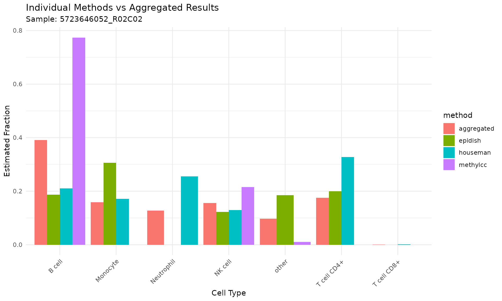

Combined Methods Approach in deconvMe
The deconvolute_combined() function in deconvMe allows
you to run multiple cell-type deconvolution methods simultaneously and
create aggregated results. This approach can help reduce method-specific
biases and provide more robust estimates of cell-type proportions.
Understanding the Output
The combined results include both individual method results and aggregated estimates:
# View the structure
head(result_combined)## # A tibble: 6 × 4
## method sample celltype value
## <chr> <chr> <chr> <dbl>
## 1 epidish 5723646052_R02C02 B cell 0.187
## 2 epidish 5723646052_R02C02 T cell CD4+ 0.199
## 3 epidish 5723646052_R02C02 T cell CD8+ 0
## 4 epidish 5723646052_R02C02 other 0.185
## 5 epidish 5723646052_R02C02 Monocyte 0.306
## 6 epidish 5723646052_R02C02 Neutrophil 0
# Check available methods
unique(result_combined$method)## [1] "epidish" "houseman" "methylcc" "aggregated"
# Check available cell types
unique(result_combined$celltype)## [1] "B cell" "T cell CD4+" "T cell CD8+" "other" "Monocyte"
## [6] "Neutrophil" "NK cell"Cell-Type Standardization
The function automatically standardizes cell-type names across methods:
##
## Attaching package: 'dplyr'## The following objects are masked from 'package:dbplyr':
##
## ident, sql## The following object is masked from 'package:minfi':
##
## combine## The following objects are masked from 'package:Biostrings':
##
## collapse, intersect, setdiff, setequal, union## The following object is masked from 'package:XVector':
##
## slice## The following object is masked from 'package:Biobase':
##
## combine## The following object is masked from 'package:matrixStats':
##
## count## The following objects are masked from 'package:GenomicRanges':
##
## intersect, setdiff, union## The following object is masked from 'package:GenomeInfoDb':
##
## intersect## The following objects are masked from 'package:IRanges':
##
## collapse, desc, intersect, setdiff, slice, union## The following objects are masked from 'package:S4Vectors':
##
## first, intersect, rename, setdiff, setequal, union## The following objects are masked from 'package:BiocGenerics':
##
## combine, intersect, setdiff, setequal, union## The following object is masked from 'package:generics':
##
## explain## The following objects are masked from 'package:stats':
##
## filter, lag## The following objects are masked from 'package:base':
##
## intersect, setdiff, setequal, union
# Show how cell types are mapped
cell_type_mapping <- data.frame(
Original = c("CD8T", "CD4T", "B", "NK", "Mono", "Neu", "Unknown"),
Standardized = c("T cell CD8+", "T cell CD4+", "B cell", "NK cell", "Monocyte", "Neutrophil", "other")
)
knitr::kable(cell_type_mapping, caption = "Cell-type standardization mapping")| Original | Standardized |
|---|---|
| CD8T | T cell CD8+ |
| CD4T | T cell CD4+ |
| B | B cell |
| NK | NK cell |
| Mono | Monocyte |
| Neu | Neutrophil |
| Unknown | other |
The “Other” Category
The “other” category includes: - Cell types not in the standardized mapping - Method-specific cell types without equivalents - Rare or specialized cell populations
This category should be interpreted carefully, as it may represent: - True rare cell types - Method-specific artifacts - Incomplete cell-type coverage
Visualizing Combined Results
# Create visualization of individual vs aggregated results
library(ggplot2)
# Filter for one sample to show the comparison
sample_data <- result_combined[result_combined$sample == result_combined$sample[1], ]
ggplot(sample_data, aes(x = celltype, y = value, fill = method)) +
geom_bar(stat = "identity", position = "dodge") +
labs(title = "Individual Methods vs Aggregated Results",
subtitle = paste("Sample:", sample_data$sample[1]),
y = "Estimated Fraction",
x = "Cell Type") +
theme_minimal() +
theme(axis.text.x = element_text(angle = 45, hjust = 1))
Limitations and Considerations
1. Method Heterogeneity
Different methods use different algorithms and reference datasets, which may not be directly comparable. Consider: - Whether methods are validated for your tissue type - The quality and relevance of reference datasets - Algorithm-specific assumptions
2. Equal Weighting
The current implementation gives equal weight to all methods. This may not be optimal if: - Some methods are more reliable for your specific use case - Methods have different levels of validation - You have prior knowledge about method performance
Quality Control
# Check for consistency across methods
consistency_check <- result_combined %>%
group_by(sample, celltype) %>%
summarise(
mean_value = mean(value),
sd_value = sd(value),
cv = sd_value / mean_value, # coefficient of variation
.groups = 'drop'
) %>%
filter(!is.na(mean_value))
# Identify cell types with high variability across methods
high_variability <- consistency_check %>%
filter(cv > 0.5) # arbitrary threshold